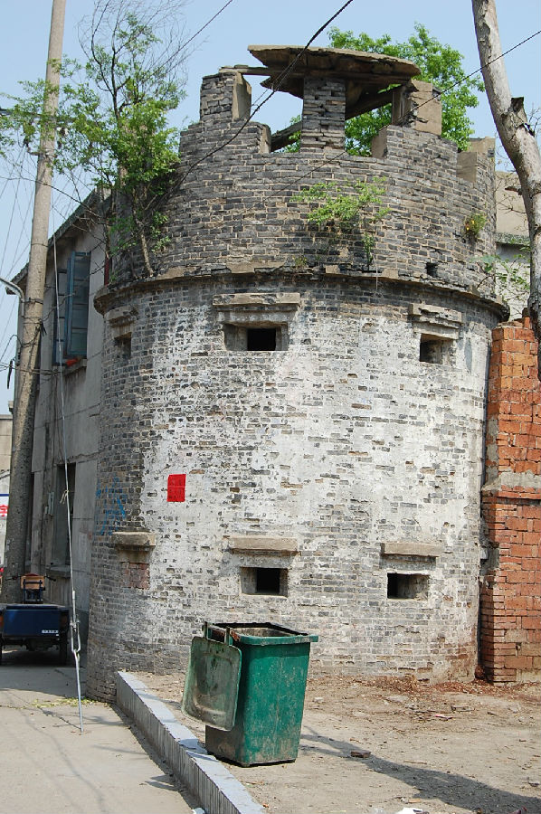

嘉兴市文物保护网 · 市级文物保护点 · 2020-11-03 · 原文

一里街碉堡位于嘉兴市秀洲区江泾镇王闻川社区一里街西端，南临市河，是抗日战争时期日军的军事据点，碉堡呈圆柱形，外径4米，内径3米，高5.4米。碉堡顶四周围墙开有垛口，专供瞭望监视。墙体用青砖砌筑，外立面共设6个射击孔，孔口内小外大，呈喇叭状。一里街碉堡是日军侵华的罪证，对于研究抗日战争史有较高的历史价值。2002年公布为嘉兴市文物保护点。